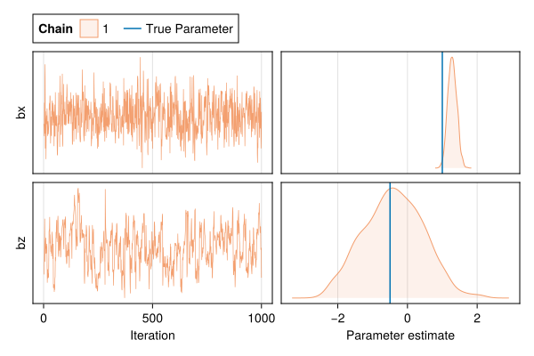
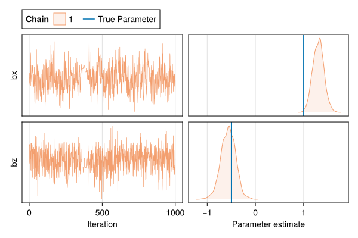
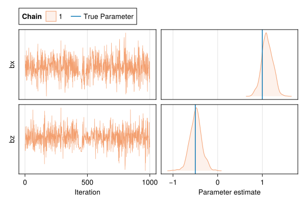
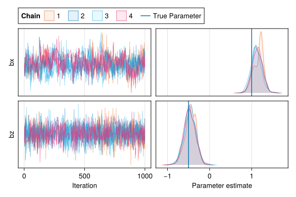

using Distributions
using LogExpFunctions
using StatsBase
using Turing, MCMCChains
using CairoMakie
using Logging;
Logging.disable_logging(Logging.Warn);These examples and description is based very heavily on this bonus lecture from Richard McElreath
Transcript of Relevant section from McElreath’s lecture video
Transcribed by open-whisper medium model, with some formatting & paragraph structure by Claude Opus 3.
This is the longest requested bonus content since I started teaching the course I think more than a decade ago. The topic is how to deal with confounding and the estimation under partial pooling. I’m going to need some background here, understand what’s going on. So it’s often plausible that there are unmeasured confounds at the group level, that is some aspect of the group that is a confound because it influences the outcome variable of interest and the treatment of interest. So if you look at the DAG on the right of this slide, you’ll see that we’re thinking about the tadpoles, I’ll explain this in some detail in a second. G is our unobserved group feature, or probably more than one feature, and there are arrows going both to the outcome S and to the treatment X. So it’s a confound, it creates a backdoor path. And we know that we want to close backdoor paths, but we haven’t measured G. Well, there’s some tricks up our sleeves when we have repeat observations. This literature is very confusing, which is why I’m often asked to talk about it, because every field and even every subfield uses different terminologies and seems to have a different modeling preference. So it’s incredibly confusing. These are often sometimes called group level confounding. The word endogeneity gets thrown around as if that resolved the ambiguity. Correlated errors people talk about. And then there’s this field called econometrics, where all of their terminology is different. The basic issue is the group level variables can have direct and indirect influences, and we need to think about that when we draw our generative models. Let’s build this up one step at a time, and then I’ll show you some of the models that are used in this area and explain the options and the sorts of problems that each addresses. So again, think about the tadpoles, keep things simple. We’ve got unobserved features of the tank that will affect survival, and that’s something that we need to be worried about to estimate other parts of the experiment, the treatment of interest that’s coming. There are also measured features of the group or tank, here I’m going to call them Z. These are things that are features of the tank, so every tadpole in the tank experiences the same Z. This is called a group level variable or group trait. And then there’s the thing of interest, which varies at the individual level. These are things we might measure about each individual tadpole, and we’re interested in the causal effects of those individual level traits on survival. And then the problem can arise that it’s often very plausible that unmeasured features of the cluster of the group of the tank, in this case, that can influence survival directly, may also influence it indirectly, mediated through the traits of individuals. Yeah, let me give you, wait, so here’s the idea. Our estimate is the distribution of survival, intervening on X, and the problem is there’s a backdoor path through G, so what can we do about that? If you want to think about some examples, maybe tadpoles aren’t your favorite thing and you can’t think about how this would work, but it could be that there’s some feature of the tank like temperature that affects individual growth and also immediately survival, and so it has two routes towards affecting survival, both through long-term effects on individuals and immediate effects on individuals at the time of death. Often this literature talks about classrooms because these sorts of models are used a lot in measuring student progress and doing teacher evaluations, and so you can think about the clusters now as being classrooms, and classrooms have lots of things about them that make them different from one another, and many of them are unmeasured or even unimagined, and we’re interested in the effect of student preparation, which has got a subscript I on it because it applies to each individual student, and test scores, S sub I, which again is a feature of the individual student, and then there are measured things about the classrooms like temperature Z at the bottom. What could be unmeasured about classrooms, it could be noisy classrooms that directly reduce test scores because it’s hard to take the test in the noisy classroom, but noisy classrooms could also reduce student preparation, and so there could be a direct and indirect effect. Political scientists are interested in time-varying versions of this problem, where the individuals are individual time points, and they’re clustered by country or nation, and so for example, people might ask how, which party is ruling a country at any point in time T, how that influences the economy at T or sometime after T, and there are things we measured about the resources or infrastructure of these countries that we think might influence the economy as well, be a competing cause, but there are lots of unmeasured things, possibly, that we haven’t even imagined, and those things might influence both who becomes a ruling party and the economy directly. For example, when the economy takes a certain state, through these influences, those influences might simultaneously result in certain styles of politics becoming popular. Okay, so what do we do? We’ve got our estimate, we want to measure the influence of X on Y, and we know there’s a confound G, we believe there’s a confound G, it’s often a good assumption, and so what can we do, and this is one of those cases where there are multiple estimators and they all have trade-offs, and I want to walk you through the issues involved. The first one is the so-called fixed effects model, this is very popular in lots of fields actually, and it’s a reasonable choice, I’m not going to tell you not to use it, but it’s got some drawbacks, and I want to explain those to you, I also want to explain to you why it can work. The second is a multi-level model, and I’m going to show you what the sort of naive multi-level model which is not, doesn’t take the confounds into account, what it does, how it behaves in this circumstance, and then we’re going to fix the naive multi-level model, well fix it, it wasn’t broken in the first place, the naive multi-level model just didn’t account for the confounding, so we’re going to use a multi-level model that does, and I like to call these MUNLAC machines, MUNLAC was a man, he was an agricultural economist who was interested in these problems. Okay, so to do this, we want to simulate some data so we know the right answer, so that’s what I’m doing on this slide, the code at the top, I’ve got 30 groups, and you can think about these as tadpoles if you like, where y will be survival, and x will be some feature of the tadpole like it’s health, and z is something else we measure about it, or you can think about it as students in classrooms, where y is test scores and x is how much they study, and the unmeasured g things are unmeasured things about the classrooms, and z is the teacher, or something like that, and so we have 30 groups, tanks or classrooms, 200 tadpoles or students, and I create some regression parameters there at the top, the minus two is the overall rate of the outcomes, this is a binary outcome, so it happens less than half the time across all the units, and then I create an effect for z on y and I have it be slightly negative minus point five, and then that lowercase g vector I just sample tadpoles in the tanks or students into groups at random, this means that some groups have more tadpoles slash students than others, and you can see the table of that on the bottom, right, so there are some groups like group number one has 11, but group number two only has five students, and then the u sub g’s are our unobserved confounds, the u for unobserved and the g subscript that there’s one for each group, and I just sample those, and they vary quite a bit across groups, the standard deviation of 1.5, then sample the x’s, these are individual level variables, there’s one for each individual tadpole slash student, but their mean is the unobserved confounds in each group, I’ll say that again, we sample the individual x’s, there’s 200 of them, but the mean in each group is that unobserved u sub g, yeah, and that’s where the confounding comes in, is that the individual level traits are caused partly by those that unobserved group confound, or group variable, then simulate disease and then finally, the master equation at the bottom there, this is just a random Bernoulli variable, where the probability of each y sub i is the sum of all those things, where there’s some global intercept alpha zero, which again is i set to minus two, so that the event usually doesn’t happen, net the other effects, and then x, now notice I just add x here, which means it’s coefficient is one, and we’re going to want to keep that in mind as we look through the following slides, and then the confound, and again, I make it just as strong as x, for the sake of the example, so the confounding is obvious, you can make the confounding weak and then you could ignore the whole problem, right, so I want to give you a case where it’s strong, and then we add the z, yeah, and the z made its coefficient slightly negative minus .5. Okay, let’s make some models, first the fixed effects model, and the fixed effect model, what you do is you do what we’ve been doing since the beginning of the course, you have all these units, groups, and you’re going to treat their index as a, create a categorical index for the groups, and you’re going to make a big vector of, of intercept parameters of alphas, we’ve been doing this for a long time, I didn’t, that those models are often called fixed effects models, and the idea is you have repeat observations within each of those clusters, and you estimate a unique alpha for each, but you do it without pooling, so the no pooling, so it’s a fixed prior, and in non-basin approaches, the prior has an infinite variance even, right, we’re not going to do something that silly, but it’s a fixed prior, and so you don’t get any pooling, so the alphas only are only learned from the data within each group, at the prior, and these models can work, I’m going to show you in a second that this can de-confound, and the reason is actually pretty weird, but they’re inefficient because there’s no pooling, but that inefficiency actually allows them to soak up the confounding effect, right, and the reason is because the intercepts essentially fit the average confounding effect, because there’s one intercept for all of the individuals in the group, and remember the confound was just added in the generative simulation, I’ll go back to the previous slide and show it to you, so you look at the line that generates Y, you see that the unobserved UG is just added in there, and so when we estimate alpha, we’re estimating that value, and that’s why it works. Clever, huh? The problem here, well there’s multiple problems, the first problem is, as I said, it’s inefficient, we’d like some pooling on these alphas, but we’ll get to that in a few slides, the second problem, excuse me, my voice is going here, the second problem is when we do this, when we use fixed effects, we can’t include Z, I’ll say that again, when we use fixed effects, we can’t include Z, and that’s because it becomes unidentifiable to separate the effect of Z from the global intercept, because they’re both just added to every prediction within each group, you look at the model on the right, for prediction of every case I, there’s alpha GI, and there’s ZGI times some coefficient, and so the values of those two parameters, alpha G and the alpha for each group, and beta Z times the Z of each group, there’s just an infinite number in principle of combinations of parameter values that’ll fit, and so only the prior ends up mattering in this case, and I’ll show you the consequence of that, and so what you’ll read in like econometric textbooks is that you just can’t include group level predictors, the group level predictors are sometimes the whole research question, yeah, like teacher effects or something like that, and in that case, you’re sunk, and the fixed effect strategy actually blocks you from being able to progress. Here’s what it looks like in ULAM code, I don’t think there’ll be any surprises here, because these are just a categorical model like we did in the second week of the course, and then at the bottom of the slide, I show you the posterior distribution samples from the posterior distributions for the fixed model in the dark black line, that’s the model we’re looking at, the fixed effects model, and the gray density is a model that I’m going to call the naive model, and I haven’t shown you code for that, but that’s just the model, if you took the model, the fixed effects model, and you took the subsetting off of alpha so that there’s the same alpha for every group, that’s naive model, it’s the model that ignores the group differences completely, yeah, and just uses X and Z for each group as ordinary predictors, and unsurprisingly that model is confounded, so if you look at the lower left densities, the vertical dashed line is the true effect we know from the generative model, now we don’t expect any particular sample to exactly get that, but we’d like the high density regions of the posterior distributions to cover the true value, I’ll say that again, should never expect any particular sample to exactly and precisely give you the true data generating value, but it’d be nice if most of the time, the posterior distributions, the high density regions of the posterior distributions are over the true values, yeah, and we see that’s true for the fixed effect model in the lower left, but it’s not for the naive model, and that’s just the expected effect of the confounding, it’s the effect is overestimated because it’s getting like a double dose, right, it’s getting it from the XIs, and it’s getting it from the UGs, and then the naive model ignores the group differences, but the fixed effect model nets out that constant effect by putting it into the intercepts, and then in the lower left we look at the coefficient estimates for Z, and this is the flip side, naive model gets it right on the money, it does a fantastic job estimating the group level of Causse, but the fixed effect model is hopeless here, right, it knows nothing, absolutely nothing, and that’s because what I told you of this effect, that it can’t separate the intercepts from the coefficient on Z, and it’s a completely undetermined sort of modeling problem, this is well known by the way, and fixed effect models just don’t allow you to insert, to include group level predictors. Okay, multi-level model, multi-level model’s got a different problem, and that is that it ignores the confound, well it doesn’t ignore it, it often does better than the naive model, but it’s still subject to more confounding because of the partial pooling, right, which is a good thing, remember I keep telling you we like partial pooling and we do, we really do, but the partial pooling pulls the intercepts towards one another, remember, especially for groups that don’t have a lot of individuals in them, a lot of tadpoles or students, and as a consequence it compromises on identifying the confound so that it can get better estimates of the average tendencies of the group, and there’s lots of things, not just the confound that vary by group, and some of them are just pure direct effects, so the intercept is a mix of a lot of things in principle, and so maybe we want a good estimate of it, but the multi-level model is essentially designed ignoring the confound in a way, and even though on average it does better than the naive model, it won’t do as well as the fixed effects model on average, but it often does pretty well, surprisingly, you can try some simulations and see, but I’m going to show you a case where it does worse, because that’s the expectation, so you get better estimates for the groups, the average tendencies of the groups, the unmeasured features of groups, and a worse estimate for X, which is weird, right, but you can include group level predictors, which, you know, again, may be the whole point of your research would be things that apply to the group, so let me show you what the code looks like and show you how it does, so again, upper left here’s the code, there’s a little bit of weird machinery in this ULAM model that I’m going to teach you next week, and I apologize for breaking up the timeline here, but getting this model to run appropriately requires this technique called non-centered priors, and that’s all that’s going on there, but if you just ignore that transparse line, you can read the model normally, and this is just a plain multi-level model, there’s an alpha for each group, and we use partial pooling, there’s an alpha bar, and I call it tau instead of sigma, but it’s just a scale parameter, just like sigma, this is standard deviation across groups, and we include X and the Z, and we run this, and you see at the bottom the updated posterior distributions, in the lower left the effect of X on Y, and you can see it’s a little better than the naive model by distinguishing the groups, but it’s not as good as the fixed effects model, it’s been only, it’s a compromise between the two, just as partial pooling is a compromise between the fixed effects model and the naive model, so in some sense this is obvious in hindsight, in the lower right the multi-level model identifies Z, and just like the naive model does, there’s been no change there. Okay, so people have known about this kind of problem in this trade-off for a long time, about the fixed effects models being better at removing group level confounding, but multi-level models being better at estimation, and therefore prediction, so if you were purely interested in prediction, there’d be no reason to use the fixed effects model, right, but if you’re interested in inference on do X, right, a causal inference for the effect of X, or some other variable, then you might want to use the fixed effects model, and just not care about predictive accuracy at the group level, but you can have your cake and eat it too, and I’m going to introduce you two more models, and then I’m done here. The first I call this the Munlack machine, and Munlack was a man, I said he’s an agricultural economist, give you the citation to the paper on the bottom, this is a very difficult paper to read if you’re not trained in statistics, I’m afraid, but there’s lots of other papers that cite it, that explain it very well, and so if you’re interested in this literature, I would do a citation search on Munlack and find another paper that explains his paper. That said, I’m going to try to explain the key insight to you right here. So what the Munlack machine does, you look at the dag on the right of this slide, is it notes that we have something else, we have an average X within each group, so you take up all the XIs that are in any particular group, little g, and you average them, you’ve got this thing, X bar, which is the average, and that’s also a descendant of the unobserved confound, and so it gives us information about it. So if we condition on that descendant on X bar for each group and treat it like a group level variable, that will partly de confound. Yeah, the inference of the influence of X sub i on Y sub i. Yeah, because remember conditioning on a descendant is is like conditioning on the parent taught you this and I think it was week two or week three. It was week three, but is not as effective. Yeah, because X bar is not a copy of the unmeasured aspects in the circle with G there. So this this works. It’s got some inefficiencies, but you get to have partial pooling. So you get grew good group effects, you get a more de confounded, a better de confounded treatment effective X, X sub i that is. But there’s a new in a new problem here is that this is not very efficient, because this is not a proper way to respect the uncertainty in X bar, we don’t actually know X bar, I mean, you think you know X bar, you just average the data. But look, it the uncertainty in it varies by groups, some groups have a dozen individuals in them in the simulation I showed you and some have three. We’re ignoring the variation in the quality of the measurement of X bar cross groups when we include it like a known variable like this. So we’re going to fix that too, but hang on. All right, so you get this big loget prediction equation at the bottom there. And on the far right, you’ll see that I’ve added a new beta coefficient for X bar. And we just include X bar as the data point. And this is the mud lack machine. And it’s genius, actually, it’s genius. And there’s a code for it up top. I construct X bar just by looping over groups and using the mean function. And you just drop it in his data. And then we update the posterior distributions at the bottom and I’ve drawn mud lack in blue. And you’ll see mud lack is in this particular example very de confounded. He’s flown over to the other side a little bit. But there’s a lot of probability density over the true value. This is this is not a terrible job. And unlike still can model group level effects, you’ll see on the right, it’s piling up with all the others, it’s only the fixed effects model that sucks at estimating Z. Okay, one more. And then I’m done. Let’s fix the problem of improperly respecting the uncertainty in X bar. This is an example of this full luxury base thing that I’ve shown you in multiple bonus rounds, I think so far. This is my joking language is meant to be ironic. But the idea is we take the generative model to tag and we express all of its relationships in a single Markov chain. That’s the idea. You could call this the latent mud lack machine because we don’t include X bar is data, but we estimate X bar using the observed Xi’s. Yeah, and then we get a posterior distribution for it. And we can include that as a predictor. So in principle, what this means is we’ve run two simultaneous regressions. Yeah, so let me, let me split up this tag and show you what I mean. We’re going to have a model for Y. And in the, it says at the top of the screen. And so the code in the upper left, this is the Bernoulli outcome Y. And it is influenced by unmeasured group things alpha for each group. And also then the Xi and then Z. And then on the end of this line, I’ve added this U for each G. This is the unobserved confound that we’d like to estimate. And this is just a parameter. Yeah, but don’t panic. We’re going to estimate. And then I have this transparse line again, which I said, don’t look, I’ll explain that to you next week. And then the X model, the X model in the middle, X is only influenced by the confound, right? That was the generative model, that’s the assumption. And so this is an ordinary linear regression, X is a metric variable. And it’s just this just a linear regression with some intercept AX. And then we modeled the influence of this unobserved group level variable U for each G. And those are defined as just a vector there, right? I see we have a vector of length in G, which is the number of groups. And I assign each of those U values in normal zero one prior. Now, since it’s a latent variable, you can assign it almost any prior you like. Yeah, because it has no metric that you can measure. And then there’s a bunch of priors at the bottom and those are standard. This seems weird, I know, but again, it’s perfectly legitimate models like this are used all the time. This is basically a latent measurement error model. The idea is, we have some measurements, the each of the X of I’s, which gives us information about the group mean for those X’s. But we haven’t observed the group mean. And so we’re estimating it. And that group mean is U for each group G. Yeah, so really, this is like a measurement error model. Yeah, so oh, I should have highlighted this already. So you see, yes, there’s the U for each G appears in both of the equations. Yeah, and it’s in both of the decks. And we can estimate it. And you’ll see here now, the latent mudlack machine I’ve drawn in green, I appreciate that this is one of the ugliest figures from the course so far. But don’t worry, I’ll I’ll aspire to do something even worse in future lectures. But just focus on the green one for now. And you’ll see that’s the mudlack machine, high density region is over the true effect for X. And for Z, this is your best option, by far, if you’ve got the Bayesian horsepower to do it. All right, let me summarize. Should you use fixed effects? Yeah, I mean, sure, there are times when it’s fine. I mean, if you’re not, if you don’t, if you’re not interested in group level predictors, and you’re not interested in prediction, no problem. Yeah, go ahead and do it. Should you include average X, that is the mudlack machine. Often that works fine. If you don’t have the Bayesian horsepower, it’ll work quite well. It’s better than ignoring the group level confounding for sure. But these days, you might as well do the latent model. Everybody’s got the horsepower to do this. And you know, if you know how to do it, go ahead and do it. I don’t see any major obstacle anymore. A decade ago, I might as has something different, because lots of people didn’t have convenient software to do these latent measurement error models. But now it’s really standard in lots of fields. And I advise you just to do that. But in any case, there’s other kinds of confounding, both at the individual level, time varying confounding, all kinds of stuff. And you shouldn’t assume that any of the things I’ve showed you in this bonus round apply to all kinds of group level confounding. What you need to do is draw your assumptions, make a generative model, develop a solution, if one is possible, that way, for your bespoke purpose. Yeah. Okay, thank you.
N_groups = 50
N_id = 700
a0 = -2
bZY = -0.5
bXY = 1.0
g = sample(1:N_groups, N_id) # sample into groups
Ug = rand(Normal(1.5, 1), N_groups) # group confounds
X = rand.(Normal.(Ug[g])) # individual varying trait
Z = rand(Normal(0, 1), N_groups) # group varying trait (observed)
Y = @. rand(Bernoulli(logistic(a0 + bXY * X + Ug[g] + bZY * Z[g])))700-element BitVector:
1
1
0
1
1
1
1
0
1
0
⋮
1
1
1
1
1
0
1
1
0Code to Plot the Chains’ trace
function trace(chns, real_param=Dict(:bx => bXY, :bz => bZY))
params = names(chns, :parameters)
n_chains = length(MCMCChains.chains(chns))
n_samples = length(chns)
n_params = length(params)
colors = to_colormap(:tol_vibrant)
width = 600
height = max(400, 80 * n_params)
fig = Figure(; size=(width, height))
for (i, param) in enumerate(params)
ax = Axis(fig[i+1, 1]; ylabel=string(param))
for chain in 1:n_chains
values = chns[:, param, chain]
lines!(
ax,
1:n_samples,
values;
label=string(chain),
color=(colors[chain], 0.7),
linewidth=0.7
)
end
hideydecorations!(ax; label=false)
if i < n_params
hidexdecorations!(ax; grid=false)
else
ax.xlabel = "Iteration"
end
end
for (i, param) in enumerate(params)
ax = Axis(fig[i+1, 2]; ylabel=string(param))
for chain in 1:n_chains
values = chns[:, param, chain]
density!(
ax,
values;
label=string(chain),
color=(colors[chain], 0.1),
strokewidth=1,
strokecolor=(colors[chain], 0.7)
)
end
vlines!(real_param[param], label="True Parameter")
hideydecorations!(ax)
if i < n_params
hidexdecorations!(ax; grid=false)
else
ax.xlabel = "Parameter estimate"
end
end
axes = [only(contents(fig[i+1, 2])) for i in 1:n_params]
linkxaxes!(axes...)
Legend(fig[1, 1:2], first(axes), "Chain", orientation=:horizontal, titlehalign=:left, halign=:left, titleposition=:left)
rowgap!(fig.layout, 10)
colgap!(fig.layout, 10)
return fig
endtrace (generic function with 2 methods)Fixed Effects Model
@model function fixed_effects(Y, X, g, N_groups, Z)
# Priors
a ~ Normal(0, 10)
bx ~ Normal(0, 1)
bz ~ Normal(0, 1)
# Group-level effects
a_g ~ filldist(Normal(0, 10), N_groups)
# Model
for i in eachindex(Y)
logit_p = a + a_g[g[i]] + bx * X[i] + bz * Z[g[i]]
Y[i] ~ Bernoulli(logistic(logit_p))
end
end
chain_fixed_effects = sample(fixed_effects(Y, X, g, N_groups, Z), NUTS(), 1000)
trace(chain_fixed_effects[[:bx, :bz]])
Mulitlevel Model
@model function multilevel(Y, X, g, N_groups, Z)
# Priors
ᾱ ~ Normal(0, 1)
τ ~ Exponential(1)
bx ~ Normal(0, 1)
bz ~ Normal(0, 1)
# Group-level effects
α_g ~ filldist(Normal(ᾱ, τ), N_groups)
# Model
for i in eachindex(Y)
logit_p = α_g[g[i]] + bx * X[i] + bz * Z[g[i]]
Y[i] ~ Bernoulli(logistic(logit_p))
end
end
chain_multilevel = sample(multilevel(Y, X, g, N_groups, Z), NUTS(), 1000)
trace(chain_multilevel[[:bx, :bz]])
Mundlak Model
@model function mundlak(Y, X, g, N_groups, Z)
x̄ = [mean(X[g.==i]) for i in 1:N_groups]
# Priors
ᾱ ~ Normal(0, 1)
τ ~ Exponential(1)
bx ~ Normal(0, 1)
bz ~ Normal(0, 1)
bx̄ ~ Normal(0, 1)
# Group-level effects
α_g ~ filldist(Normal(ᾱ, τ), N_groups)
# Model
logit_p = @. α_g[g] + bx * X + bz * Z[g] + bx̄ * x̄[g]
Y .~ Bernoulli.(logistic.(logit_p))
end
chain_mundlak = sample(mundlak(Y, X, g, N_groups, Z), NUTS(), 1000)
trace(chain_mundlak[[:bx, :bz]])
Mundlak Latent Model
@model function mundlak_latent(Y, X, g, N_groups, Z)
# Priors
α_x ~ Normal(0, 1)
bu_x ~ Exponential(1)
τ ~ Exponential(1)
σ ~ Exponential(1)
ᾱ ~ Normal(0, 1)
bx ~ Normal(0, 1)
bz ~ Normal(0, 1)
bu ~ Normal(0, 1)
# Group-level effects
α_g ~ filldist(Normal(ᾱ, τ), N_groups)
u ~ filldist(Normal(0, 1), N_groups)
# Model
# X model
μ = @. α_x + bu_x * u[g]
X .~ Normal.(μ, σ)
# Y model
logit_p = @. α_g[g] + bx * X + bz * Z[g] + bu * u[g]
Y .~ Bernoulli.(logistic.(logit_p))
end
chain_mundlak_latent = sample(mundlak_latent(Y, X, g, N_groups, Z), NUTS(), MCMCThreads(), 1000, 4)
trace(chain_mundlak_latent[[:bx, :bz]])